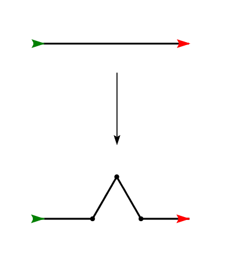
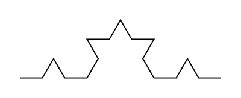
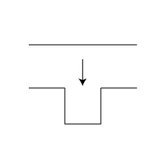
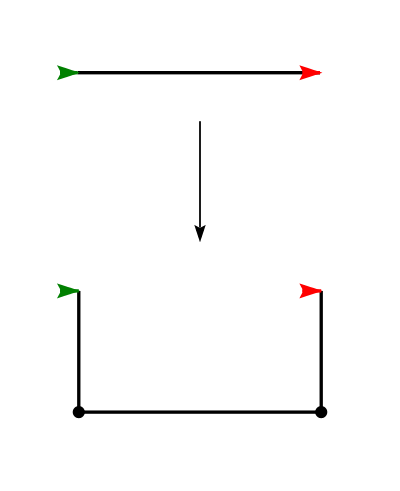
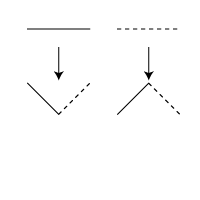
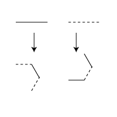

{kind=link}

Turtle module to draw fractals such as
Sierpinski's
Triangle,
the Koch
Snowflake, and the
Dragon Curve.
To access the Turtle module and define a turtle, you
can use the following lines of code:
import turtle t = turtle.Turtle()
By calling methods on the variable t, we can make the
turtle navigate around the screen and draw lines. (If you want to
know why it is called a "turtle", you can read
about turtles
and Logo
and Seymour Papert.)
Some turtle commands you might find useful:
t.forward(n)
and t.back(n) will move the turtle forward or
backwards n pixels in the current
direction. t.goto(x, y) will go to a particular location
on the screen.
t.right(d), t.left(d) will turn
the turtle left or right by d degrees.
t.dot(size)
t.penup(),
t.pendown()
t.speed(s), where 1 =
slowest and 10 = fastest

(Note that the angles are 60 and 120 degrees; the green turtle shows where the turtle starts and the red turtle shows where it ends.) If we repeat this replacement operation, again replacing each of the four line segments, we obtain something like this:

Continuing to repeat this process yields an ever more detailed "snowflake" curve. For example, here is the result after iterating 4 times:
In a file called fractal.py, type in the following
recursive function:
import turtle
def koch(t, n, size):
if n == 0:
t.forward(size)
else:
koch(t, n - 1, size / 3)
t.left(60)
koch(t, n - 1, size / 3)
t.right(120)
koch(t, n - 1, size / 3)
t.left(60)
koch(t, n - 1, size / 3)
This function uses the turtle object t to draw an
order-n Koch curve, that is, the result of iterating
this process n
times. In the base case (when n == 0), it simply
draws a line of length size; in the recursive case, it
draws four smaller copies of an order-(n - 1) Koch curve,
arranged as shown in the replacement rule above.
Once you have typed in the function, test it as follows:
>>> t = turtle.Turtle() >>> t.speed(10) >>> t.penup() >>> t.goto(0, -100) >>> t.pendown() >>> koch(t, 1, 100) >>> t.penup() >>> t.goto(0, 0) >>> t.pendown() >>> koch(t, 2, 100) >>> t.penup() >>> t.goto(0, 100) >>> t.pendown() >>> koch(t, 3, 100) >>> t.penup() >>> t.goto(0, 200) >>> t.pendown() >>> koch(t, 4, 100)
In your Lab Evalution Document, answer the following questions:
koch2(t, n, size) that draws the
Koch 2
fractal.

Write a function called koch3(t, n, size) that draws the
Koch 3
fractal.
Note that in the middle of the above replacement pattern there is a long vertical segment. This can either be replaced by a single half-sized copy, or by two quarter-sized copies. These different methods yield different (but related) fractals. Use whichever one you like better! For the C-curve below, however, the bottom segment really does need two half-size copies (hence the dot in the middle), instead of a single full-size copy; otherwise it will look pretty boring.
Write a function called c_curve(t, n, size) that draws the
C-curve
fractal.

Note the direction the turtle is facing at the beginning and end of the replacement above!

Note that the above replacements are drawn to scale: the distance between the start and end points are the same. The blue and orange lines make a right angle. You should think about the question: what should be the length of the blue and orange lines at the bottom (after replacement), relative to the length of the lines at the top (before replacement)?

This one is a bit strange since the turtle ends up facing in a different direction after the replacement. Just go with it! Also, for this one the relative lengths are not as important; they will just determine how big the final Sierpinski triangle gets.
If you are feeling adventurous, try drawing a Fractal Plant. Entire books have been written on this subject.
You must hand in:
fractal.py
{kind=link}
.svg){kind=link}
{kind=link}